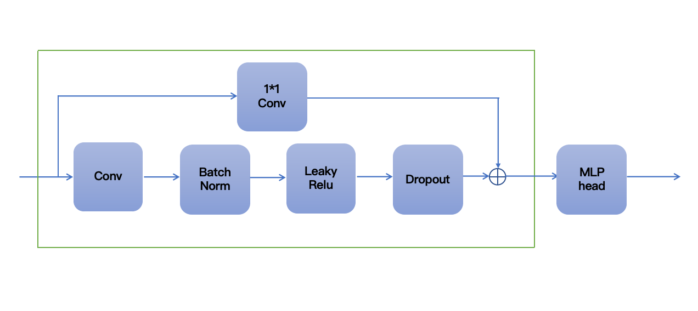
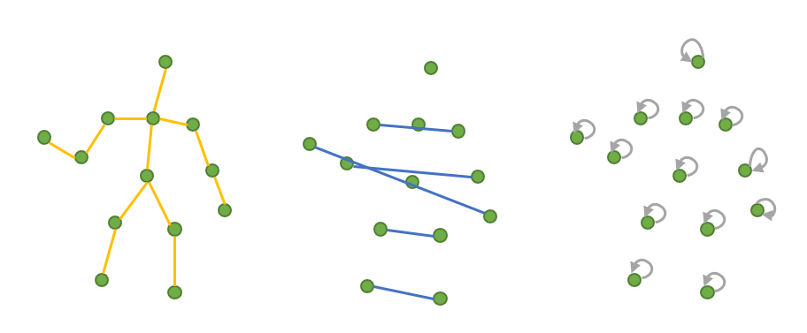
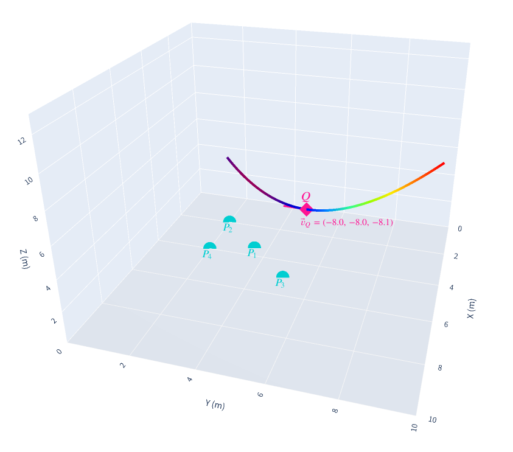
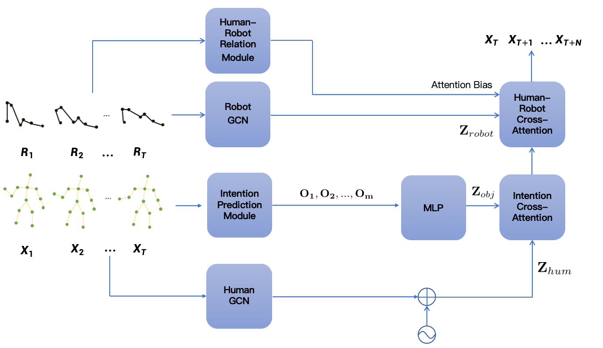

Hydrodynamics-inspired intention cues, residual GCNs, and geometry-aware attention enable real-time and physically consistent human motion prediction for collaborative robots.
Animated pipeline: intention cues, GCN encoders, geometry-aware attention, and decoding.
Conference talk walkthrough of the paper highlights and results.
Accurate future motion forecasts keep collaborative robots safe and helpful. We fuse hydrodynamic intention cues, articulated graph encoders, and geometry-aware attention to predict human poses conditioned on robot motion and task objects. Experiments on the CoMaD benchmarks deliver state-of-the-art accuracy and real-time inference, with successful deployment on physical manipulators.
Hand motion generates a velocity field; candidate objects accumulate responses to yield soft intention scores, delivering continuous, interpretable cues.
Spatial-temporal graphs with natural, symmetric, and self connections (humans) and kinematic chains (robots) capture articulated motion with residual stacking.
Stacked graph convolution modules with an MLP head align input/output horizons.
Relative displacement, distance, and inverse-distance features feed an MLP to bias cross-attention, enforcing proximity-aware focus between agents.
Human tokens attend to object tokens to inject goal semantics; a second cross-attention fuses intention-aware human and robot features using the learned bias.
Natural, symmetric, and self connections stabilize articulated reasoning.
Compute hydrodynamic responses from hand trajectories to candidate objects; produce m×4 tensors (x, y, z, score) describing object relevance.
Targets aligned with hand velocity gain stronger responses.
Residual GCNs process historical poses (human) and kinematic states (robot), retaining spatial topology across time.
Encoders feed relation-aware cross-attention for future pose decoding.
Construct per-time-step attention biases from human–robot displacement features to reflect physical constraints and collision risk.
Cross-attend intention-aware human tokens with robot tokens, then regress future poses. Loss blends MPJPE, short-horizon emphasis, and limb-length regularization.
Our model outperforms Zero Velocity, siMLPe, and InteRACT across human–human (H–H) and human–robot (H–R) collaboration tasks.
| H–H Final Displacement Error (mm) | ||||
|---|---|---|---|---|
| Task | Reactive Stirring | Object Handover | Table Setting | All |
| ZV | 80.6 | 81.0 | 130.1 | 88.8 |
| siMLPe | 51.9 | 54.6 | 100.7 | 62.0 |
| InteRACT | 52.4 | 59.3 | 105.6 | 66.1 |
| Ours | 49.2 | 50.9 | 97.1 | 58.7 |
| H–R Final Displacement Error (mm) | ||||
|---|---|---|---|---|
| Task | Cabinet Pick | Cart Place | Tabletop Manip. | All |
| ZV | 91.0 | 73.4 | 66.1 | 69.2 |
| siMLPe | 61.7 | 53.6 | 51.3 | 56.5 |
| InteRACT | 60.6 | 50.1 | 42.9 | 50.7 |
| Ours | 55.8 | 49.4 | 41.9 | 48.5 |
| H–H MPJPE (mm) across horizons | ||||||||||||
|---|---|---|---|---|---|---|---|---|---|---|---|---|
| Frames | Reactive | Handover | Table Setting | All | ||||||||
| 5 | 10 | 15 | 5 | 10 | 15 | 5 | 10 | 15 | 5 | 10 | 15 | |
| ZV | 28.6 | 44.0 | 53.9 | 25.5 | 40.6 | 51.8 | 36.5 | 61.0 | 80.6 | 28.4 | 45.1 | 57.0 |
| siMLPe | 11.5 | 22.0 | 30.2 | 11.1 | 22.3 | 31.5 | 17.3 | 37.1 | 54.8 | 12.2 | 24.4 | 34.6 |
| InteRACT | 11.6 | 22.3 | 30.5 | 13.5 | 25.1 | 34.9 | 19.1 | 39.4 | 57.7 | 13.3 | 26.2 | 37.1 |
| Ours | 10.7 | 20.3 | 28.2 | 10.5 | 20.8 | 29.2 | 16.6 | 35.8 | 52.9 | 11.6 | 22.9 | 32.4 |
| H–R MPJPE (mm) across horizons | ||||||||||||
|---|---|---|---|---|---|---|---|---|---|---|---|---|
| Frames | Cabinet | Cart | Tabletop | All | ||||||||
| 5 | 10 | 15 | 5 | 10 | 15 | 5 | 10 | 15 | 5 | 10 | 15 | |
| ZV | 25.7 | 42.1 | 55.6 | 22.5 | 35.7 | 46.2 | 20.3 | 32.2 | 41.7 | 22.7 | 36.2 | 47.2 |
| siMLPe | 18.6 | 29.9 | 39.0 | 17.6 | 26.9 | 34.3 | 15.9 | 24.8 | 32.1 | 17.4 | 27.0 | 34.8 |
| InteRACT | 17.9 | 29.5 | 38.5 | 16.2 | 25.4 | 33.5 | 13.9 | 22.0 | 28.8 | 15.9 | 25.6 | 33.6 |
| Ours | 15.5 | 25.5 | 34.4 | 15.8 | 25.2 | 33.0 | 13.6 | 21.5 | 28.0 | 15.1 | 24.2 | 32.0 |
Cabinet scenario: predictions remain stable across 50–200 ms horizons, aligning with ground-truth and preserving coordination with the robot arm.
Overlayed qualitative rollout video showing human and robot trajectories across time.
Human guides the robotic arm to place pieces; predicted intention steers safe placement.
Robot selects complementary pieces based on predicted human intent, completing cooperative placement without collisions.
Jointly modeling human biomechanics, robot context, and task semantics yields accurate, intention-aware motion forecasts. Our approach improves safety and efficiency in collaborative manipulation and runs in real time.